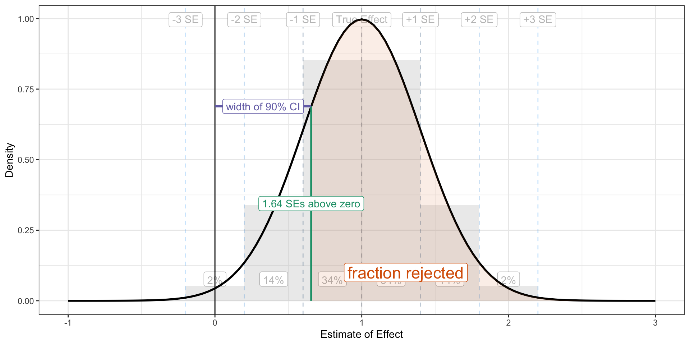

Power, Part III: The Rule of 3.64 for Statistical Power
Simple, Actionable Guidelines Using Statistical Power’s Key Ratio
statistical power
hypothesis tests
power analysis
methodology
confidence intervals
computing
R
Statistical power is an abstract quantity. It’s easy to understand what it means, but harder to think about how to manipulate it. To make power more intuitive, I encourage students to think about the ratio of the true effect to the standard error (i.e., signal-to-noise). I explain why a target ratio of 2.48 is equivalent to a target power of 80% (and why you should really shoot for 3.64!). These guidelines help you build actionable intuition about statistical power.
Author
Carlisle Rainey
Published
June 12, 2023
Background
I’ve wrapped up the argument that you should pursue statistical power in your experiments. In sum, you should do it for you (not a future Reviewer 2) and you shouldn’t see confidence intervals nestle consistently against zero.
In this post, I’d like to develop the intuition for power calculations, two helpful guidelines, and one implication.
Main takeaway: You need the ratio of the true effect and the standard error to be more than 3.64.
Starting Point: The Sampling Distribution
When you run one experiment, you realize one of many possible patterns of randomization. This particular realization produces a single estimate of the treatment effect from a distribution of possible estimates. The distribution of possibilities is called a “sampling distribution.”
Thus, we can think of the estimate as a random variable and its distribution as the sampling distribution. The sampling distribution is key to everything I do in this post, so let’s spend some time with it.
Let’s imagine that we did the exact same study 50 times. Let’s say that we computed a difference-in-means in dollars ($) donated.1 I refer to this difference-in-means as the estimated treatment effect. It is the estimate of the average treatment effect (in $). This estimate will vary across the many possible patterns of randomization because each pattern puts different respondents in the treatment and control group.
1 I just want an easy-to-use unit here, and dollars meets that criteria. Other units work fine, too.
We can visualize this with ggnaminate. We can imagine each iteration of the study as producing a particular estimate. We continue to repeat the study and collect the estimates. Eventually, we can produce a histogram from this collection of estimates. This histogram represents the sampling distribution and is fundamental to the calculations that follow. The figure belows shows how we might collect the points into a histogram.
Code
library(tidyverse)library(gganimate)library(magick)# gif parsduration <-24# must be evenfps <-25nframes <- duration*fpsscale <-2.5width <-8height <-6res <-125# study parameterstrue_effect <-1se <-0.4# number of times to repeat the studyn_studies <-50# nframes# create a data frame of confidence intervalsests <-tibble(study_id =1:n_studies, est =c(rnorm(n_studies, true_effect, se))) %>%mutate(reject_null =ifelse(est -1.64*se >0, "Yes", "No"))# add two things to the data frame of confidence intervals# 1. an initial row with study_id = 1 and est = NA so that # the plot starts empty (gganimate would start with the # first observation in place otherwise).# 2. a group variable that defines the row. This is the same# as the study_id, except the dummy row from (1) and the # actual first row have different groups.animate_data <-bind_rows(tibble(study_id =1, est =NA), # study_id = 1, est = NA ests # actual cis) %>%mutate(group =1:n()) split_animate_data <- animate_data %>%# group (row index)split(.$group) %>%accumulate(~bind_rows(.x, .y)) %>%bind_rows(.id ="frame") %>%mutate(frame =as.integer(frame))se_lines <-tribble(~se_, ~label, ~chance, ~ch_loc_, # trailing _ means not rescaeld to study se0, "True Effect", NA, NA,1, "+1 SE", scales::percent(pnorm(1) -pnorm(0), accuracy =1), 0.5,2, "+2 SE", scales::percent(pnorm(2) -pnorm(1), accuracy =1), 1.5,3, "+3 SE", scales::percent(pnorm(3) -pnorm(2), accuracy =1), 2.5,-1, "-1 SE", scales::percent(pnorm(0) -pnorm(-1), accuracy =1), -0.5,-2, "-2 SE", scales::percent(pnorm(-1) -pnorm(-2), accuracy =1), -1.5,-3, "-3 SE", scales::percent(pnorm(-2) -pnorm(-3), accuracy =1), -2.5,) %>%mutate(ch_loc = ch_loc_*se + true_effect,se = se_*se + true_effect)# start with a ggplotgg1 <-ggplot(animate_data, aes(x = est, y = study_id,group = group)) +geom_vline(data = se_lines, aes(xintercept = se, color =-dnorm(se_)), linetype ="dashed") +geom_label(data = se_lines, aes(x = se, y = n_studies +2, label = label, group =NULL, color =-dnorm(se_))) +geom_text(data = se_lines, aes(x = ch_loc, y =4, label = chance, group =NULL)) +geom_point(aes(color =-dnorm((est- true_effect)/se)),size =3) +geom_rug(sides ="b", aes(x = est, color =-dnorm((est- true_effect)/se)), alpha =0.5, length =unit(0.025, "npc")) +theme_bw() +theme(panel.grid.minor.y =element_blank()) +labs(x ="Estimate of Effect",y ="Study Number") +theme(legend.position ="none")# add dyamics to the plotgg1_anim <- gg1 +transition_states(states = group) +# how points enterenter_drift(y_mod =10) +enter_grow() +enter_fade() +# how points exit/remainexit_fade(alpha =0.5) +exit_shrink(size =1) +shadow_mark(alpha =0.5) gg1_gif<-animate(gg1_anim, nframes = nframes, duration = duration, width = width, height = height, units ="in", res = res)anim_save("gg1.gif")gg1_mgif <-image_read("gg1.gif")## plot 2: histogram# start with a ggplotgg2 <-ggplot(split_animate_data, aes(x = est, group = frame)) +geom_histogram(binwidth = se, boundary = true_effect, fill ="grey") +geom_vline(data = se_lines, aes(xintercept = se, color =-dnorm(se_)), linetype ="dashed") +geom_label(data = se_lines, aes(x = se, y =Inf, label = label, group =NULL, color =-dnorm(se_)), vjust =1.5) +geom_label(data = se_lines, aes(x = ch_loc, y =0, label = chance, group =NULL), vjust =-1) +#geom_density(linewidth = 2) + geom_rug(sides ="b", aes(x = est, color =-dnorm((est- true_effect)/se)), alpha =0.5, length =unit(0.025, "npc")) +theme_bw() +labs(x ="Estimate of Effect",y ="Count") +theme(legend.position ="none")# add dyamics to the plotgg2_anim <- gg2 +transition_states(states = frame)gg2_gif<-animate(gg2_anim, nframes = nframes, duration = duration, width = width, height = height, units ="in", res = res)anim_save("gg2.gif")gg2_mgif <-image_read("gg2.gif")new_gif <-image_append(c(gg1_mgif[1], gg2_mgif[1]), stack =FALSE)for(i in2:nframes){ combined_gif <-image_append(c(gg1_mgif[i], gg2_mgif[i]), stack =FALSE) new_gif <-c(new_gif, combined_gif)}new_gif
Before the study, we can predict two features of this sampling distribution.
First, it will usually have a bell-shaped, normal distribution.
Second, we can predict the standard deviation of this distribution with good accuracy before conducting a single study and excellent accuracy after just one study. We call the standard deviation of the sampling distribution the standard error or SE.
For our purposes, then, we can describe the sampling distribution as normally distributed with an assumed mean and SD. The mean is the assumed true effect and the SD is the well-predicted SE.
This is the key claim: In order to build power into your experiment, you must build certain properties into the sampling distribution.
The design of your experiment will not affect the normality of the sampling distribution, but it will change the true effect and the SE. Changing the true effect and the SE will change the power.
Thinking about True Effect and Standard Error as Targets
I’m leaving aside how to predict the standard error of the experiment or choose the true effect. This post is about the target standard error and true effect.
Predicting the standard error is a mechanical process mixed with a little guesswork.2 Choose a true effect is a mostly substantive decision.3
2 I’ll suggest two methods I like. First, use \(\text{predicted SE} \frac{SD of same outcome in different data set}{2 \sqrt{\text{sample size}}}\). I like to confirm this estimate with a small pilot. I sample observations from this pilot dataset, run the full analysis, and confirm that my prediction is close, and make any needed adjustments.
3Cyrus Samii likes to use the MME, I like a conservatively choosen guess of what the effect actually is.
But instead of talking about a target power, I like to talk about a target standard error (given a true effect) or a target true effect (given a standard error)—power is just not a very intuitive quantity.
To understand how the true effect and the SE relate to power, we need to introduce the confidence interval.
Testing with Confidence Intervals
I like to use 90% confidence intervals to test hypotheses (see Rainey 2014 and Rainey 2015). In short, 90% confidence intervals correspond to one-tailed tests with size 0.05 and equivalence tests with size 0.05.] The formula for a 90% CI is \(\text{estimate} \pm 1.64\text{SE}\). That is, we put “arms” around our estimate—one to the left and another to the right. Each arm is 1.64 standard errors long.
I’ll assume we have a one-sided research hypothesis that suggests a positive effect. If the lower bound (\(\text{estimate} - 1.64\text{SE}\)) is less than zero, then we fail to reject the null hypothesis. If this lower bound is greater than zero, then we reject the null hypothesis.4
4 This is equivalent to a z-test in a standard hypothesis testing framework using a p-value of less than 0.05 as the threshold for rejecting the null hypothesis.
This focus on testing rather than estimation changes the nature of the sampling distribution. Rather than an estimate along a continuous range, we get a binary outcome: either (1) reject the null hypothesis or (2) fail to reject the null hypothesis.
But the sampling distribution of estimates and the associated outcomes of tests are closely related. In particular, the logic of the test implies that *if the estimate falls less than 1.64 SEs above zero, we cannot reject the null.
We can reconstruct the figure above using this logic. Rather than plot the points continuously along the x-axis, we can color the points (and now error bars) according to whether the lower bound falls above zero or not. And we can use a bar plot showing the number of rejections and non-rejections.
Code
library(tidyverse)library(gganimate)library(magick)# gif parsduration <-24# must be evenfps <-25nframes <- duration*fpsscale <-2.5width <-8height <-6res <-125# study parameterstrue_effect <-1se <-0.4# number of times to repeat the studyn_studies <-50# nframes# create a data frame of confidence intervalsests <-tibble(study_id =1:n_studies, est =c(rnorm(n_studies, true_effect, se))) %>%mutate(reject_null =ifelse(est -1.64*se >0, "Yes", "No"),lwr = est -1.64*se,upr = est +1.64*se)# add two things to the data frame of confidence intervals# 1. an initial row with study_id = 1 and est = NA so that # the plot starts empty (gganimate would start with the # first observation in place otherwise).# 2. a group variable that defines the row. This is the same# as the study_id, except the dummy row from (1) and the # actual first row have different groups.animate_data <-bind_rows(tibble(study_id =1, est =NA), # study_id = 1, est = NA ests # actual cis) %>%mutate(group =1:n()) split_animate_data <- animate_data %>%# group (row index)split(.$group) %>%accumulate(~bind_rows(.x, .y)) %>%bind_rows(.id ="frame") %>%mutate(frame =as.integer(frame))se_lines <-tribble(~se_, ~label, ~chance, ~ch_loc_, # trailing _ means not rescaeld to study se0, "True Effect", NA, NA,1, "+1 SE", scales::percent(pnorm(1) -pnorm(0), accuracy =1), 0.5,2, "+2 SE", scales::percent(pnorm(2) -pnorm(1), accuracy =1), 1.5,3, "+3 SE", scales::percent(pnorm(3) -pnorm(2), accuracy =1), 2.5,-1, "-1 SE", scales::percent(pnorm(0) -pnorm(-1), accuracy =1), -0.5,-2, "-2 SE", scales::percent(pnorm(-1) -pnorm(-2), accuracy =1), -1.5,-3, "-3 SE", scales::percent(pnorm(-2) -pnorm(-3), accuracy =1), -2.5,) %>%mutate(ch_loc = ch_loc_*se + true_effect,se = se_*se + true_effect)# start with a ggplotgg1 <-ggplot(animate_data, aes(x = est, y = study_id,group = group)) +geom_vline(xintercept =1.64*se) +annotate("label", x =1.64*se, y =5, label ="1.64 SEs") +geom_errorbarh(height =0, aes(xmin = lwr, xmax = upr, color = reject_null)) +geom_point(aes(color = reject_null),size =3) +geom_rug(sides ="b", aes(x = est, color = reject_null), alpha =0.5, length =unit(0.025, "npc")) +theme_bw() +theme(panel.grid.minor.y =element_blank()) +labs(x ="Estimate of Effect",y ="Study Number") +theme(legend.position ="none") +scale_color_manual(values =c("Yes"="#1b9e77", "No"="#d95f02"))# add dyamics to the plotgg1_anim <- gg1 +transition_states(states = group) +# how points enterenter_drift(y_mod =10) +enter_grow() +enter_fade() +# how points exit/remainexit_fade(alpha =0.5) +exit_shrink(size =1) +shadow_mark(alpha =0.5) gg1_gif<-animate(gg1_anim, nframes = nframes, duration = duration, width = width, height = height, units ="in", res = res)anim_save("gg1.gif")gg1_mgif <-image_read("gg1.gif")## plot 2: histogram# start with a ggplotgg2 <-ggplot(split_animate_data, aes(x = reject_null, fill = reject_null), na.rm =TRUE) +geom_bar(na.rm =TRUE) +theme_bw() +labs(x ="Reject Null",y ="Count") +theme(legend.position ="none") +scale_x_discrete(na.translate =FALSE) +scale_fill_manual(values =c("Yes"="#1b9e77", "No"="#d95f02"))# add dyamics to the plotgg2_anim <- gg2 +transition_states(states = frame)gg2_gif<-animate(gg2_anim, nframes = nframes, duration = duration, width = width, height = height, units ="in", res = res)anim_save("gg2.gif")gg2_mgif <-image_read("gg2.gif")new_gif <-image_append(c(gg1_mgif[1], gg2_mgif[1]), stack =FALSE)for(i in2:nframes){ combined_gif <-image_append(c(gg1_mgif[i], gg2_mgif[i]), stack =FALSE) new_gif <-c(new_gif, combined_gif)}new_gif
The Key Ratio
The key to building statistical power into your experiment is to get “almost all” of the sampling distribution above 1.64 standard errors above zero. The portion of the sampling distribution that falls below 1.64 standard errors above zero does not allow the researcher to reject the null.
Code
library(tidyverse)# study parameterstrue_effect <-1se <-0.4se_lines <-tribble(~se_, ~label, ~chance, ~ch_loc_, # trailing _ means not rescaeld to study se0, "True Effect", NA, NA,1, "+1 SE", scales::percent(pnorm(1) -pnorm(0), accuracy =1), 0.5,2, "+2 SE", scales::percent(pnorm(2) -pnorm(1), accuracy =1), 1.5,3, "+3 SE", scales::percent(pnorm(3) -pnorm(2), accuracy =1), 2.5,-1, "-1 SE", scales::percent(pnorm(0) -pnorm(-1), accuracy =1), -0.5,-2, "-2 SE", scales::percent(pnorm(-1) -pnorm(-2), accuracy =1), -1.5,-3, "-3 SE", scales::percent(pnorm(-2) -pnorm(-3), accuracy =1), -2.5,) %>%mutate(ch_loc = ch_loc_*se + true_effect,se = se_*se + true_effect) x <-rnorm(500000, mean = true_effect, sd = se)df <-data.frame(x)bg_alpha <-0.3ggplot() +geom_histogram(data = df, aes(x = x, y =after_stat(density)), binwidth = se, boundary = true_effect, fill ="grey", alpha = bg_alpha) +geom_vline(data = se_lines, aes(xintercept = se, color =-dnorm(se_)), linetype ="dashed", alpha = bg_alpha) +geom_label(data = se_lines, aes(x = se, y =Inf, label = label, group =NULL), vjust =1.5, color =alpha('black', bg_alpha)) +geom_label(data = se_lines, aes(x = ch_loc, y =0, label = chance, group =NULL), vjust =-1, color =alpha('black', bg_alpha)) +geom_vline(xintercept =0) +geom_function(fun = dnorm, args =list(mean = true_effect, sd = se), size =1) +theme_bw() +labs(x ="Estimate of Effect",y ="Density") +geom_area(data =tibble(x =seq(1.64*se, 3*se + true_effect, by =0.1)), aes(x = x), stat ="function", fun = dnorm, args =list(mean = true_effect, sd = se),fill ="#d95f02", alpha =0.1, xlim =c(1.64*se, 3**se + true_effect)) +annotate("label", x =1.3, y = .1, label ="fraction rejected", color ="#d95f02", size =6) +annotate("segment", x =1.64*se, xend =1.64*se, y =0, yend =dnorm(1.64*se, mean = true_effect, sd = se), color ="#1b9e77", size =1) +annotate("label", x =1.64*se, y =dnorm(1.64*se, mean = true_effect, sd = se)/2, label ="1.64 SEs above zero", color ="#1b9e77") +annotate("segment", x =0, xend =1.64*se, y =dnorm(1.64*se, mean = true_effect, sd = se), yend =dnorm(1.64*se, mean = true_effect, sd = se), color ="#7570b3", size =1) +annotate("label", x =0.5*1.64*se, y =dnorm(1.64*se, mean = true_effect, sd = se), label ="width of 90% CI", color ="#7570b3") +theme(legend.position ="none") +xlim(-1, 3)

You’ll remember that “almost all” of the normal distribution falls within two standard errors of its mean. So as a starting point, let’s use this rule: get the sampling distribution two standard errors above 1.64 standard errors above zero. We can just add 1.64 and 2 together to get a sampling distribution 3.64 standard errors above zero. That is, we need \(\frac{\text{true effect}}{\text{standard error}} > 3.64\). If the true effect is larger than 3.64 standard errors, then the confidence interval will “rarely” overlap zero (about 2% of the time).
Code
library(tidyverse)# study parameterstrue_effect <-1se <-1/3.84x <-rnorm(500000, mean = true_effect, sd = se)df <-data.frame(x)ggplot() +geom_histogram(data = df, aes(x = x, y =after_stat(density)), binwidth = se, boundary = true_effect, fill ="grey", alpha = bg_alpha) +geom_vline(data = se_lines, aes(xintercept = se, color =-dnorm(se_)), linetype ="dashed", alpha = bg_alpha) +geom_label(data = se_lines, aes(x = se, y =Inf, label = label, group =NULL), vjust =1.5, color =alpha('black', bg_alpha)) +geom_label(data = se_lines, aes(x = ch_loc, y =0, label = chance, group =NULL), vjust =-1, color =alpha('black', bg_alpha)) +geom_vline(xintercept =0) +geom_function(fun = dnorm, args =list(mean = true_effect, sd = se), size =1) +theme_bw() +labs(x ="Estimate of Effect",y ="Density") +geom_area(data =tibble(x =seq(1.64*se, 3*se + true_effect, by =0.1)), aes(x = x), stat ="function", fun = dnorm, args =list(mean = true_effect, sd = se),fill ="#d95f02", alpha =0.1, xlim =c(1.64*se, 3**se + true_effect)) +#annotate("label", x = 1.3, y = .1, label = "fraction rejected", color = "#d95f02", size = 6) +annotate("segment", x = true_effect, xend = true_effect, y =0, yend =dnorm(true_effect, mean = true_effect, sd = se), color ="#d95f02", size =1) +annotate("label", x = true_effect, y =dnorm(true_effect, mean = true_effect, sd = se)/2, label ="true effect", color ="#d95f02") +annotate("segment", x =1.64*se, xend =1.64*se, y =0, yend = .75, color ="#1b9e77", size =1) +annotate("label", x =1.64*se, y = .75, label ="1.64 SEs above zero", color ="#1b9e77") +annotate("segment", x =0, xend =1.64*se, y = .125, yend = .125, color ="#7570b3", size =1,lineend ="round", linejoin ="round", arrow =arrow(length =unit(0.1, "inches"), ends ="both")) +annotate("label", x =0.5*1.64*se, y = .125, label ="1.64 SEs", color ="#7570b3", size =4) +annotate("segment", x = true_effect, xend =1.64*se, y = .125, yend = .125, color ="black", size =1,lineend ="round", linejoin ="round", arrow =arrow(length =unit(0.1, "inches"), ends ="both")) +annotate("label", x =1.64*se + (true_effect -1.64*se)/2, y = .125 , label ="ideally 2 SEs", color ="black", size =4) +annotate("segment", x = true_effect, xend =0, y =1, yend =1, color ="black", size =1,lineend ="round", linejoin ="round", arrow =arrow(length =unit(0.1, "inches"), ends ="both")) +annotate("label", x = true_effect/2, y =1, label ="ideally 3.64 SEs", color ="black", size =4) +theme(legend.position ="none") +xlim(-0.1, 2.0)
These are all the same goals. I prefer the first, but they are all equivalent targets for power.
I like this ratio because it points to strategies to increase power. You can do two things:
Increase the true effect.
Decrease the standard error.
This ratio gets you thinking not what your power is, but how to increase it. Again, power isn’t a task for the experimenter, it’s the task.5Kane (2023)6 suggests several ways researchers can increase the true effect or decrease the standard error.
5 I’m leaving aside the question of how to predict the standard error or choose a true effect for a paricular design.
6 Kane, John V. 2023. “More Than Meets the ITT: A Guide for Investigating Null Results.” APSA Preprints. doi: 10.33774/apsa-2023-h4p0q-v2.
I’ll highlight a few examples here. To increase the treatment effect, you can:
If you get the ratio to 3.64, then you’ll have 98%. This is much higher than the cutoff of 80% I hear suggested most often. If you want 80% power, rather than 98% power, you can change the 3.64 to 2.48.7 But notice that 3.64 and 2.48 are not very different. This has an important implication.
7 Find this by adding 1.64 to -qnorm(0.2).
A researcher can lower the risk of a failed study from about 1 in 5 (80% power) to about 1 in 50 (98% power) by increasing the ratio from 2.48 to 3.64. This requires increasing the treatment effect by about 50% or shrinking the standard error by about 33%. Stated differently, if you are careless and let your treatment effect fall by 33% or let your standard error increase by 50%, then your risk of a failed study increases 10-fold! Small differences can matter a lot.
The implication is this: when you are on the cusp of a well-powered study (about 80% power), then small increases in the ratio have a disproportionate impact on your risk of a failed study.
Computing Power from the Ratio
Following the logic of the picture above, we need to compute the fraction of the sampling distributin that lies above 1.64 SEs. The pnorm() function returns normal probabilities, but below specfic thresholds. By supplying the argument lower.tail = FALSE, we can get the probabilities of falling above a specific threshold.
true_effect <-1.00se <-0.4# compute powerpnorm(1.64*se, # want fraction above 1.64 SEmean = true_effect, # mean of sampling distributionsd = se, # sd of sampling distributionlower.tail =FALSE) # fraction above, not below
[1] 0.8051055
Summary
Statistical power is an abstract quantity. It’s easy to understand what it means, but harder to think about how to manipulate it. I explain why the target \(\frac{\text{true effect}}{\text{standard error}} > 2.48\) is equivalent to a target power of 80%. But you want to “almost always” reject the null, so you should shoot for \(\frac{\text{true effect}}{\text{standard error}} > 3.64\). Hopefully these guidelines help you build a bit of actionable intuition about statistical power.
If you found this fun or useful, don’t forget subscribe! 🚀